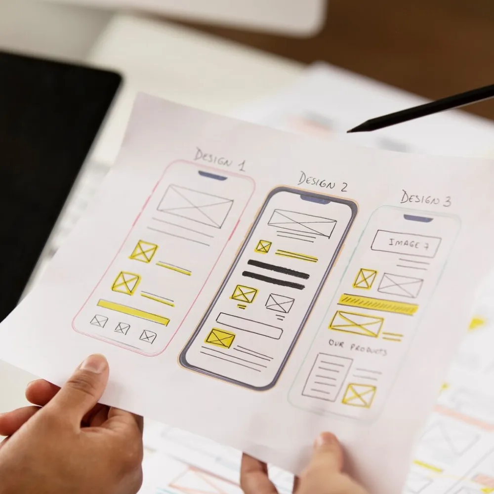
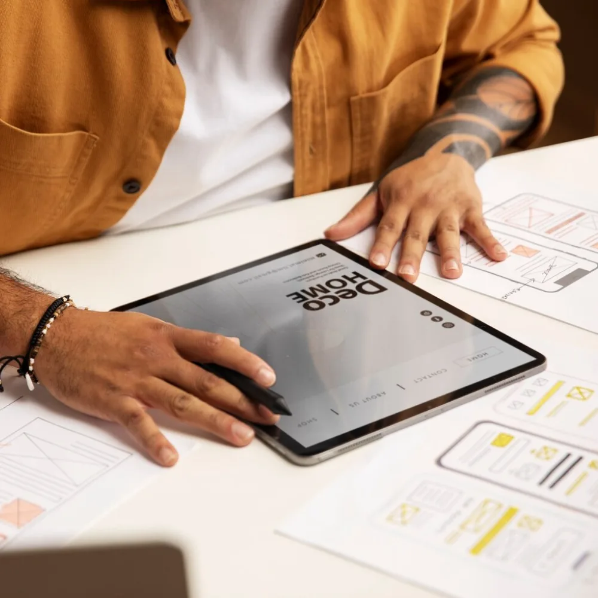

Mobile App
Design Services
Cypherox designs mobile app interfaces that make complex features feel simple, balancing usability, brand and platform conventions across iOS and Android.

When an App Works but Users Still Struggle
An app can be technically functional and still lose users if the interface is confusing, inconsistent, or slow to navigate. Poor design shows up as low engagement, high uninstall rates and support tickets asking how to do things that should be obvious. Fixing this after launch costs more than designing it properly from the start, particularly once real usage patterns reveal where the interface breaks down.
Confusing navigation drives users away before they find value.
Inconsistent design across screens erodes trust in the app.
Poor onboarding increases drop-off in the first session.
Redesigning after launch costs more than designing correctly upfront.
User-Centered Design
Interfaces built around how people actually use the app, not assumptions.
Platform Native Feel
Designs that respect iOS and Android conventions users already know.
Consistent Visual System
A design system that keeps every screen coherent as the app grows.
Built to Scale
Design foundations that support new features without a redesign later.
What Our
Mobile App Design Work Covers
App design work covers everything from early user research to a full interface system, so the app is genuinely easy to use, not just visually polished.
UX Research and Wireframing
Maps user flows and screen structure before any visual design work begins.
Have a Project in Mind? →UI Design
Designs the visual interface, including color, typography and interaction states.
Have a Project in Mind? →Design Systems
Builds a reusable component library that keeps the app visually consistent as it scales.
Have a Project in Mind? →Interactive Prototyping
Creates clickable prototypes so flows can be tested before development begins.
Have a Project in Mind? →iOS and Android Design
Designs interfaces that respect the conventions of each platform where needed.
Have a Project in Mind? →Existing App Redesign
Reworks an existing app's interface to fix usability issues and modernize the experience.
Have a Project in Mind? →Better Design Means,
Fewer
Users Dropping Off
A well-designed app keeps more users past their first session and reduces the support burden caused by confusing interfaces. Onboarding completion improves when flows are clear, engagement holds up as new features are added without breaking existing patterns and a consistent design system reduces the cost of building new screens later.
Improves onboarding completion through clearer initial flows.
Reduces support requests caused by confusing navigation.
Maintains engagement as new features are added over time.
Lowers design and development cost for future screens.

Talk Through Your App Design Requirements
Speak with someone who will ask about your app, current usability issues and target users, then outline a practical design approach.
Book a CallHire Dedicated Developers
Designers deliver app design projects by working closely with development teams, embedded in your delivery process rather than handed off as static screens.
Hardik
Senior AI and ML Engineer
Available NowBuilds production AI systems with LLM integration, agent orchestration and ML pipelines. Handles model evaluation, RAG and deployment.
Skills:
Krupa
Senior Full Stack Engineer
Available NowDelivers web and mobile applications across frontend, backend and API layers. Works with modern frameworks, databases and cloud pipelines.
Skills:
Akash
Senior Cloud and DevOps Engineer
Available NowArchitects cloud infrastructure with automated deployment, monitoring and security: container orchestration, IaC and cost optimization.
Skills:
Mobile App Design Built Around Your Industry
The right design approach depends on how users interact with your app and what they need to accomplish quickly.
Ecommerce and Retail
Retail apps need design that makes browsing, checkout and account management fast and frictionless.
- Simplifies product discovery and checkout flows.
- Reduces steps between browsing and purchase completion.
- Keeps account and order management easy to find.
Healthcare
Healthcare apps need design that keeps sensitive tasks clear and reduces user error.
- Simplifies appointment booking and record access flows.
- Reduces ambiguity in forms handling sensitive information.
- Designs with accessibility as a core requirement.
Financial Services
Finance apps need design that builds trust while keeping complex actions simple.
- Simplifies transaction and account management flows.
- Designs clear confirmation steps for sensitive actions.
- Balances security prompts with a smooth user experience.
On Demand and Marketplace Apps
Marketplace apps need design that keeps two-sided interactions, browsing and transactions moving smoothly.
- Simplifies listing discovery and booking flows.
- Keeps buyer and seller experiences distinct but consistent.
- Designs for quick repeat use across sessions.
How We Design
Your Mobile App
The process moves from understanding your users through research, design and prototyping, with testing built in before development begins.
The Tools Behind Your
App Design
We produce app design work using established design and prototyping tools suited to modern iOS and Android development.
What
Clients Say
Mobile App Design
Questions Answered
These are the questions we hear most often from teams evaluating mobile app design, covering process, platforms, timelines and ongoing support.
Yes, we design for both platforms, respecting each one's conventions where it matters while keeping the overall experience consistent across the app.
Yes, redesign work is common and typically starts with a usability review of the existing app before proposing interface changes.
Design and development can be handled together or separately, depending on your team's setup and whether you have existing developers.
Test interactive prototypes with target users before development begins so you can catch and fix usability issues early.
Timelines depend on the number of screens and the complexity of user flows. Focused apps move faster than those with extensive feature sets.
Yes, where appropriate, we build a design system so new screens and features stay visually consistent as the app grows.
We provide design specifications and remain available to support development, so the built app matches the intended design.
Let's Design an App Your
Users Actually Enjoy
If you are evaluating an app design project, the next step is a conversation about your users and current app. We will outline a realistic path before anything is committed.